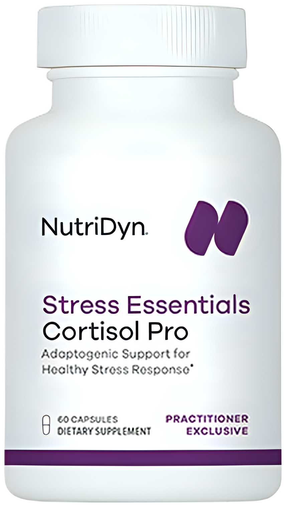
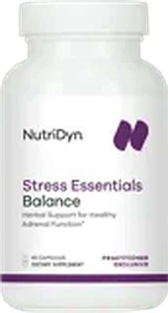
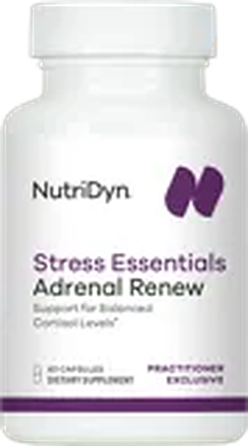

Stress and Cortisol
How your stress system works, and how to steady it
Your brain and adrenal glands answer every stress, from a deadline to a sleepless night, as one team: the HPA axis. Its messenger, the hormone cortisol, gives you fuel and focus, then switches off. When stress never lets up, the system stays on alert and your daily rhythm can flatten: tired in the morning, wired at night.
sleeping
after sleep
tight muscles
to focus
or low
stomach
often
weight gain
Is it “adrenal fatigue”?
You may hear stress-tiredness called that, but it is not a medical diagnosis. A review of 58 studies found no proof that stress wears out the adrenal glands. What can change is your cortisol rhythm, and the daily habits on the back can help reset it.
See a doctor soon if you notice
- Weight loss with deep tiredness
- Dizzy or faint when you stand
- Craving salt, darkening skin
- Nausea, vomiting or belly pain
- A rounder, redder face with fast belly weight gain
- Wide purple stretch marks
- Easy bruising, weak thigh muscles
- New high blood pressure or blood sugar
On a steroid such as prednisone? Never stop it suddenly. Thinking of harming yourself? Call or text 988, any time.
Sources: Endocrine Society guidelines (adrenal insufficiency 2016, 2024; Cushing’s 2008); Pituitary Society 2021; Cadegiani 2016; Smith 2006; Miller 2007.
Steady Your Stress ResponseSix daily habits that help reset your cortisol rhythm
Get outdoors within an hour of waking.
Five minutes a day of long, slow exhales.
150 minutes a week. A brisk walk counts.
7+ hours. Short nights raise cortisol.
Late coffee can cost you sleep.
Friends soften your stress response.

- Supports a healthy stress response
- Helps maintain healthy cortisol levels
Per 2 capsules: 300 mg maral root, 250 mg Relora bark, 250 mg rhodiola, 150 mg ashwagandha, 100 mg L-theanine, 100 mg phosphatidylserine

- Supports energy and stamina under stress
- Helps your body adapt to daily demands
Per 3 capsules: 800 mg cordyceps, 400 mg ashwagandha (Sensoril), 107 mg Asian ginseng extract, 100 mg rhodiola, 58 mg ginseng root
- Promotes a calm, relaxed mood
- Helps you unwind in the evening
Per 2 capsules: 500 mg GABA, 200 mg L-theanine
Formerly Calm Eze

Raspberry Lemon
- Supports relaxation and restful sleep
- Stress can use up magnesium
Per scoop: 200 mg magnesium, 2 g myo-inositol, 500 mg taurine, 100 mg L-theanine, 5 mg vitamin B6

- Replaces your current glandular (dried cow adrenal)
- B vitamins and vitamin C for a healthy stress response
Per 2 capsules: 300 mg vitamin C, 50 mg B1, 15 mg B2, 60 mg B6, 50 mg B5, 15 mg zinc, 300 mg cow adrenal, 200 mg holy basil, 100 mg L-tyrosine, 50 mg cow spleen
Your daily rhythm
- Stress Essentials Cortisol Pro 2 capsules
- Stress Essentials Balance 3 capsules
- Stress Essentials Calm 2 capsules
- Mag Calm Pro 1 scoop
Provider checkKeep taking your medicines.
- Ashwagandha (Cortisol Pro, Balance): 550 mg a day. It can make sleep, anxiety or thyroid pills stronger: tell your provider if you take any. Yellow skin or eyes, or dark urine? Stop both and call a doctor.
- Adrenal Renew is a glandular (dried cow adrenal): never with another. On prednisone, hydrocortisone or thyroid pills? Ask your provider first, and stop glandulars slowly.
- On warfarin, an antidepressant, or diabetes or heart medicine? Rhodiola, ginseng and holy basil can change how some of these work. Ask your provider first.
- A day adds up to 350 mg rhodiola and 400 mg L-theanine. With Adrenal Renew, B6 reaches 65 mg: tingling or numb hands or feet? Tell your provider.
- Pregnant, trying to get pregnant or breastfeeding? Skip Cortisol Pro and Balance, and ask your provider before the others.